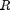
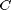
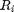
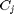
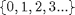
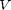
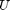
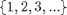
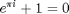
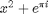

SECTION TITLE
DESCRIPTIVE TEXT
Contents
BiMat Use case for basic functionalities
This use case will introduce the user to the basic functionalities of the BiMat software.
Add the source to the matlab path
%Assuming that you run this script from examples directory g = genpath('../'); addpath(g); close all;
Bipartite class and main input
The Bipartite is the fundamental class of the BiMat software. This class works as a communication bridge between all the available classes. Therefore, in order to work with BiMat we will always need to instantiate at least an object of this class.
The main input of the Bipartite class is a matlab matrix, where the rows will represent the node set  and the columns the node set , such that if the element matrix(i,j)>0 a link between node  and  exist. This matrix input can contain only non-negative integers . However, the user need to know that values bigger than 1 are only used during plotting (i.e. color interactions according to weight) and not in the existing algorithms (which only work in the boolean version of the matrix).
Optional input
BiMat has two different types of optional input. The first type is for node labeling and the main use of it will be for labeling row and column nodes during plotting. The input must be encoded in a cell of strings for each set  and  nodes, such that each string in a cell corresponds to the label of a node. The size of such cells must corresponds to the number of nodes.
The second type of output consist of the type of node for either row and column nodes. For an example of type of nodes consider a bipartite network where and represent pollinators and plants respectivally. In turn pollinators can be classified in birds and insects, which will be the classification for set . The information of this classification is useful to explain modularity in terms of node classification. You can consul the moebus use case for clear example. The classification input must be vectors of the same size than the number of nodes in rows and columns. The values must be positive integers .
Creating input for Bipartite class
Here will show an example of the simplest way of creating Bipartite object:
%Creating the data matrix = [2 0 2 2;... 1 2 2 1;... 2 0 0 2;... 0 1 2 2;... 0 0 1 0]; % For the next variables observe that the size of matrix 5x4 correlates with % them row_labels = {'insect 1', 'insect 2', 'insect 3', 'bird 1', 'bird 2'}; col_labels = {'flower 1', 'flower 2', 'grass 1', 'gras 2'}; %Notice that as long as each kind is represented by a diferented positive %integer you will be fine. row_ids = [1 1 1 3 3]; %Notice that 1 in col_ids not necessearly corresponds to 1's in row_ids. col_ids = [1 1 5 5]; %
Creating a Bipartite object from matlab data
Using the data we just created we can now create or Bipartite object:
bp = Bipartite(matrix);
bp.row_labels = row_labels;
bp.col_labels = col_labels;
bp.row_class = row_ids;
bp.col_class = col_ids;
%
Creating a Bipartite object from text files
An additional way of creating data is by using the static functions from the Reader.m class. Currently two different formats are available. The first input format will contain only the information of the adjacency matrix (you will need to add row/column labels and ids if you need). An file example for creating the last data will be:
2 0 2 2 1 2 2 1 2 0 0 2 0 1 2 2 0 0 1 0
The last format input can be called using:
bp = Reader.READ_BIPARTITE_MATRIX('input_matrix.txt'); % We need to add labels and classification ids by ourselves bp.row_labels = row_labels; bp.col_labels = col_labels; bp.row_class = row_ids; bp.col_class = col_ids;
The second input format consist on writing the adjacency list. This input format will read also the row and column node labels. However if you need ids for the classification you will need to add for yourself. An example for the last data will be:
insect_1 2 flower_1 insect_1 2 grass_1 insect_1 2 grass_2 insect_2 1 flower_1 insect_2 2 flower_2 insect_2 2 grass_1 insect_2 1 grass_2 insect_3 2 flower_1 insect_3 2 grass_2 bird_1 1 flower_2 bird_1 2 grass_1 bird_1 2 grass_2 bird_2 1 grass_1
The middle columns is optional. If it is not used, the reading function will assume that is composed of ones only. We can now just call:
bp = Reader.READ_ADJACENCY_LIST('input_adja.txt.'); % Wee need to add classification ids by ourselves bp.row_class = row_ids; bp.col_class = col_ids;
PREFORMATTED TEXT

for x = 1:10 disp(x) end
% SDFSDAFSDAFSDAFDS ASDF SAFD ASD FASDFSDA ASDFDSAF
ASDFSAD  MathWorks